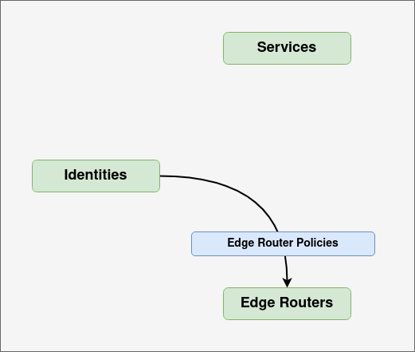

Policies
Ziti policies control which identities can access or host which services via which edge routers. There are three kinds of policies, and we'll walk through what kind of access each policy type grants, as well as walk through some use cases.
Each policy type relates two of the following entity types: identities, services and edge routers.

Service Policies
Service policies are entities within the Ziti Controller which provide identities authorization to services.

There are two kinds of service policies:
- Dial policies, which control who can use a service
- Bind policies, which control who can provide a service
They are separate because in most cases a given identity will not both use and provide any given service, so it's important to be able to distinguish between the two privileges.
Service policies are how access to application can be segmented. Each service (and corresponding application) can be accessed only by the identities which are given access to it. An identity can have access to any number of services, and it is straightforward to add or remove identities from service policies. With roles and role attributes (described below), it's easy to group entities and minimize manual maintenance of groups.
Having at least one Service Policy is vital because without any service policies the Ziti network will have no identities authorized to send traffic over the Ziti network.
Edge Router Policies
Edge router policies are entities within the Ziti Controller which provide identities access to edge routers. In order to access or provide a service the identity must first access the Ziti network fabric. Edge routers are the points through which SDK based applications can get that access.

Not every identity should necessarily be allowed to use every edge router. Identities or groups of identities may have dedicated edge routers for a number of reasons.
- For resource isolation due to SLAs
- For resource isolation because they are hosting a service
- Edge routers may be colocated with a set of identities
- A group of identities may need to use a particular version of an edge router
Having at least one Edge Router Policy is necessary because without at least one, no identities will be able to send traffic over the Ziti network because traffic must enter the network via an edge router.
Service Edge Router Policies
Service edge router policies are entities within the Ziti Controller which provide services access to edge routers. They are similar to edge router policies except they determine via which edge routers a service can be used or provided.

There are a few reasons you might want to have pools of edge routers dedicated particular services or service groups.
- Resource isolation due to SLAs
- Geographic/political boundaries. Some services may need to be accessible only from specific areas to comply with local laws
Having at least one Service Edge Router Policy is vital because without at least one, no services will be able to accept traffic over the Ziti network because traffic must enter the network via an edge router.
Roles and Role Attributes
In order for policies to work they need a way to specify which entities to include in the policy. All Ziti policies work the same way.
- The entities included in policies (identities, serviced and edge routers) can all be assigned role attributes
- For example: an identity could be given the attributes
sales,euif that identity belongs to a sales person from the European Union
- For example: an identity could be given the attributes
- Each policy has two list of roles, one for each entity type that the policy is relating
- Service policies have identityRoles and serviceRoles
- Edge router policies have identityRoles and edgeRouterRoles
- Service edge router policies have edgeRouterRoles and serviceRoles
- Each list can contain role attributes, which are prefixed by hash tags, and ids, which are prefixed with at-symbols.
- For example: a service policy might have
identityRoles = [#sales, #north-america, @81cc68d0-700a-491f-8e98-4b43a0b30a9f]serviceRoles = [#office, @738006f2-e33e-4964-945f-7431000d229f]
- Note that external tools such as the CLI and the ZAC will likely use names instead of IDs. So the roles might instead look like
identityRoles = [#sales, #north-america, @jsmith-laptop]serviceRoles = [#office,@crm-suite]
- For example: a service policy might have
- Each policy also has a semantic. The semantic dictates how multiple role attributes will be interpreted.
[#sales, #eu]could mean every identity which has#salesand#eu, or it could mean every identity which has#salesor#eu- The
allOfsemantic will include only entities have all the listed role attributes - The
anyOfsemantic will include all entities that have any of the listed role attributes
- The
- No matter the semantic, any entities which are listed by
@idwill be included in the policy - There is a special role attribute
#allwhich will include all entities of a given type. This is useful for simpler setups which may not be segmenting edge routers, as well as for development and testing.
Policy Interaction
Important Note: When an identity is using a service, the identity and service must have at least one on-line edge router in common in order for a connection to be made.
When an identity is trying to establish a session to use or host a service the Ziti controller will verify that they access via service policy. Once the session is established, the controller will return a list of edge routers that the identity can use to connect to that service. The list will be all edge routers which both the identity and service have access to. It is possible that an identity may have access to a service and access to edge routers, but none of those edge routers can be used to access that particular service.
Policy Advisor
To help diagnose issues there is a policy advisor API which the CLI has a wrapper for.
$ ziti edge controller policy-advisor services -q
OKAY : simple-client (1) -> simple (1) Common Routers: (1/1) Dial: Y Bind: N
OKAY : simple-server (1) -> simple (1) Common Routers: (1/1) Dial: N Bind: Y
$ ziti edge controller policy-advisor services ssh simple-client -q
ERROR: simple-client (1) -> ssh (1) Common Routers: (1/1) Dial: N Bind: N
- No access to service. Adjust service policies.
The policy advisor can look at all services or identities, or a specific service and identity, and see if there are any common problems, such as:
- Does an identity not have access to any services?
- Does a service have no one who can access it?
- Do a service and identity have no edge routers in common?
- Do a service and identity have edge routers in common, but they are all off-line?
Managing Policies
Service Policies
Creating a Service Policy
- On the left side nav bar, click "Ziti Policies"
- On the top nav bar, click "Service Policies"
- In the top right corner of the screen click the "plus" image to add a new Service Policy
- Choose a name for the Service Policy, such as "My Service Policy"
- Select "Dial" or "Bind" in the Type dropdown
- Dial policies allow identities to use or connect to the service
- Bind policies allow identities to host or provide the service
- Enter the services you want to include in the policy
- Specific services can be referenced by ID or name using
@. For example, a service calledsshcan be referenced using@ssh. - Services can be referenced by role attribute using
#. For example, any service which has thesalesrole attribute will be included if#salesis included in the service roles list.
- Specific services can be referenced by ID or name using
- Enter the identities you want to include in the policy
- Specific identities can be referenced by ID or name using
@. For example, as identity calledjsmith-desktopcan be referenced using@jsmith-desktop. - Identities can be referenced by role attribute using
#. For example, any identity which has thesalesrole attribute will be included if#salesis included in the identities roles list.
- Specific identities can be referenced by ID or name using
- Specify the role semantic
- If you select
Has Any Rolethen if you specify multiple roles then all entities which include any of the roles will be included. - If you select
Must Have All Roles, then if you specify multiple roles then only entities which include all of the given roles will be included
- If you select
- Click save
Edge Router Policies
Creating an Edge Router Policy
- On the left side nav bar, click "Ziti Policies"
- It should already be selected, but if not, on the top nav bar, click "Edge Router Policies"
- In the top right corner of the screen click the "plus" image to add a new Edge Router Policy
- Choose a name for the Edge Router Policy, such as "My Edge Router Policy"
- Enter the edge routers you want to include in the policy
- Specific edge routers can be referenced by ID or name using
@. For example, an edge router calledus-east-4can be referenced using@us-east-4. - Edge routers can be referenced by role attribute using
#. For example, any edge router which has theus-seastrole attribute will be included if#us-eastis included in the edge routers roles list.
- Specific edge routers can be referenced by ID or name using
- Enter the identities you want to include in the policy
- Specific identities can be referenced by ID or name using
@. For example, as identity calledjsmith-desktopcan be referenced using@jsmith-desktop. - Identities can be referenced by role attribute using
#. For example, any identity which has thesalesrole attribute will be included if#salesis included in the identities roles list.
- Specific identities can be referenced by ID or name using
- Specify the role semantic
- If you select
Has Any Rolethen if you specify multiple roles then all entities which include any of the roles will be included. - If you select
Must Have All Roles, then if you specify multiple roles then only entities which include all of the given roles will be included
- If you select
- Click save
Service Edge Router Policies
Creating a Service Policy
- On the left side nav bar, click "Ziti Policies"
- On the top nav bar, click "Service Edge Router Policies"
- In the top right corner of the screen click the "plus" image to add a new Service Edge Router Policy
- Choose a name for the Service Edge Router Policy, such as "My Service Edge Router Policy"
- Enter the services you want to include in the policy
- Specific services can be referenced by ID or name using
@. For example, a service calledsshcan be referenced using@ssh. - Services can be referenced by role attribute using
#. For example, any service which has thesalesrole attribute will be included if#salesis included in the service roles list.
- Specific services can be referenced by ID or name using
- Enter the services you want to include in the policy
- Specific services can be referenced by ID or name using
@. For example, a service calledsshcan be referenced using@ssh. - Services can be referenced by role attribute using
#. For example, any service which has thesalesrole attribute will be included if#salesis included in the service roles list.
- Specific services can be referenced by ID or name using
- Specify the role semantic
- If you select
Has Any Rolethen if you specify multiple roles then all entities which include any of the roles will be included. - If you select
Must Have All Roles, then if you specify multiple roles then only entities which include all of the given roles will be included
- If you select
- Click save